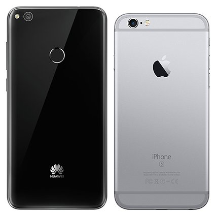

Az első és legfontosabb: kapcsoljuk ki a készüléket! Ha ez megvan, távolítsuk el a SIM kártya tálcáját a készülékhez kapott — iPhone tulajok számára ismerős — célszerszámmal.
Második lépés. Vegyük le a készülék hátlapját. Számos készülékkel ellentétben most nincs szükség csavarok lazítására, pöckök kihúzására, csak simán pattintsuk le az illesztések mentén.
Harmadik lépés A hátlap eltávolítást követően már beleszaladunk pár csavarba, összesen 6 darabba. Csavarozzuk ki ezeket a torx csavarhúzónk segítségével. Negyedik lépés A P8 alsó részéből eltávolított csavarok után a hangszórók szabaddá válnak. A lapos fejű csavarhúzónk segítségével óvatosan emeljük ki, majd távolítsuk el az alkatrészt. Ötödik lépés Az alaplapot egy vékony, fémrétegből készült keret védi a külső behatásoktól. Mielőtt hozzáférhetnénk, ezt a műszerész csipeszünk segítségével el kell távolítani. Hatodik lépés Húzzunk ki minden csatlakozót és szalagkábelt az alaplapról, hogy kivehessük a készülékházból. Lehetőség szerint törekedjünk az óvatosságra, mert az alaplap sérülése a készülék használhatatlanná tételével egyenlő! Hetedik lépés A kiszerelt alaplapról távolítsuk el az elő- és hátlapi kamerákat. Ehhez húzzuk ki a szalagkábeleiket a csatlakozókból. Nyolcadik lépés Távolítsuk el az akkumulátor csatlakozásait, majd vegyük ki a helyéről. Az akksi nagyon erős ragasztóval került rögzítésre, így különösen figyeljünk arra, hogy nehogy megrongáljuk, meghajlítsuk! Kilencedik lépés Távolítsuk el a ház aljából a vibramotort, a jobb felső sarokból pedig a szenzorokat tartalmazó áramkört, valamint a hívásnál használt hangszórót középről. Törekedjünk a sérülésmentességre! Tizedik lépés A melegítő segítségével hevítsük fel picit a kijelzőnél a ragasztási pontokat, majd óvatosan távolítsuk el a panelt a vákumos tappancs segítségével.
